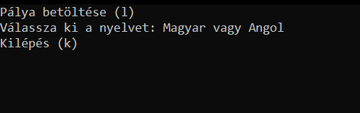
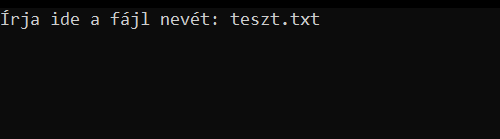
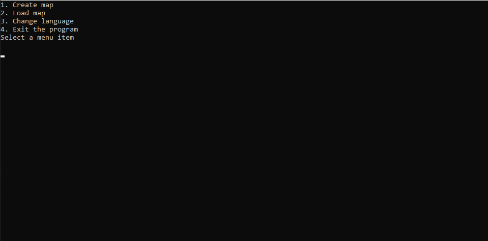

The maze
How to the maze

After the welcome screen the menu welcomes the player.
The games starts in hungarian, but there is an option to change language. To start a game the player has to load in a map.
To load a map you have to give the program the files name.

The map should be in the same folder as the program!!
The game is about a labirint where the player has to find all the rooms and get out.
The player can move with the W(up) A(left) S(down) D(right) keys.
The player can also save the game (with his progress) at any time.
About the making
The gane was made by: Gajdos Csanád.
"It was hard because of the limited time."
Map editor
Guide
After the start, the welcome screen welcomes the player.
This is also where you can change language.
After you continue, you can:

- 1. Create a map
- 2. Load a map
- 3. Change language
- 4. Exit
If you chose the "create map" option, first, you should give the map a size.
You can put on the map objects, if you give the program the coordinates and the object.
Also, you can save, delete objects and wipe the whole map.
If you want to load a map, you should choose the "load map" option from the menu, and give the program the name of the file.
Warning: the file should be in the same folder as the program!
About the making
The map editor was made by: Beke Tamás.
"There were difficulties, but i managed to overcome them"